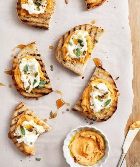

The Little Kitchen
A family food blog with easy, well tasted, family approved recipes!
Lunch Ideas

- Healthy Lunch Wraps

Ingredients :
- Dijon Mustard Vinaigrette
- ¾ cup extra-virgin olive oil
- ¼ cup white wine vinegar
- ¼ cup fresh lemon juice
- 3 tablespoons Dijon mustard
- 2 tablespoons honey
- 1 garlic clove
- ½ teaspoon sea salt
- ¼ cup Parmesan cheese, optional
- For the Wraps
- 2 cups cooked chickpeas, drained and rinsed
- 3 curly kale leaves, stemmed and finely chopped
- 6 Brussels sprouts, thinly sliced
- ½ cup thinly sliced radicchio
- Shredded Parmesan cheese, optional
- 1 ripe avocado, sliced
- 4 extra-large tortillas
Instructions :
- Make the dressing. In a blender, combine the oil, vinegar, lemon juice, mustard, honey, garlic, salt, and cheese, if desired. Blend until creamy and emulsified.
- Make the wrap fillings. In a small bowl, use a potato masher to mash the chickpeas with ¼ cup of the dressing, ¼ teaspoon salt, and several grinds of fresh black pepper.
- In a medium bowl, toss the kale, Brussels sprouts, and radicchio with ⅓ cup of the dressing.
- Assemble the wraps: divide the chickpea mixture, salad mixture, avocado, and cheese, if using, among the tortillas. Fold the left and right sides of the tortilla over the filling. Fold the bottom flap of the tortilla up and over the filling and roll the wrap closed. Wrap in foil, slice in half crosswise, and serve with the remaining dressing on the side for dipping.
- Best Egg Salad
- Veggie Grain Bowl
- Sesame Soba Noodles